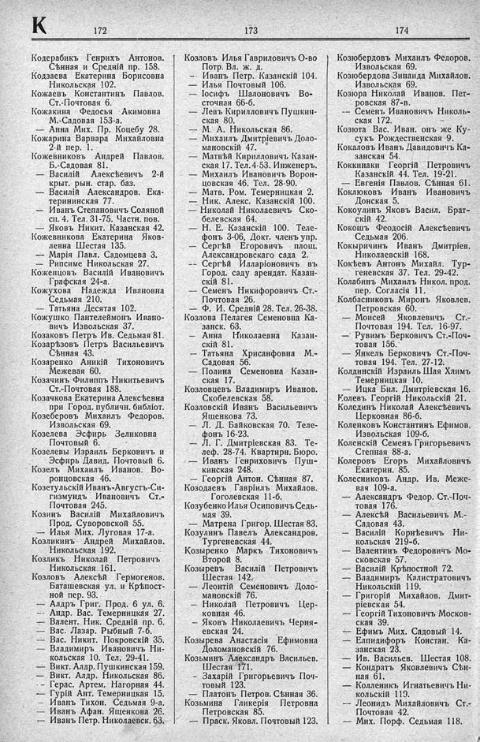

Лист источника 408
Скан

Распознанный текст
К 172
Кодерабикъ Генрихъ Антонов.
Сѣнная и Средній пр. 158.
Кодзаева Екатерина Борисовна
Никольская 102.
Кожаевъ Константинъ Павлов.
Ст.-Почтовая 6.
Кожакина Федосья Акимовна
М.-Садовая 153-а.
— Анна Мих. Пр. Коцебу 28.
Кожарина Варвара Михайловна
2-й пер. 1.
Кожевниковъ Андрей Павлов.
Б.-Садовая 81.
— Василій Алексѣевичъ 2-й
крыт. рын. стар. баз.
— Василій Александров. Ека-
терининская 77.
— Иванъ Степановичъ Соляной
сп. 4. Тел. 31-75. Частн. пов.
— Яковъ Никит. Казанская 42.
Кожевникова Екатерина Яков-
левна Шестая 135.
— Марія Павл. Садомцева 3.
— Рипсиме Никольская 27.
Коженцовъ Василій Ивановичъ
Графская 24-а.
Кожухова Надежда Ивановна
Седьмая 210.
— Татьяна Десятая 102.
Кожушко Пантелеймонъ Ивано-
вичъ Извольская 37.
Козаковъ Петръ Ив. Седьмая 81.
Козарѣзовъ Петръ Васильевичъ
Сѣнная 43.
Козаренко Аникій Тихоновичъ
Межевая 60.
Козачинъ Филиппъ Никитьевичъ
Ст.-Почтовая 188.
Козачкова Екатерина Алексѣевна
при Город. публичн. библіот.
Козеберовъ Михаилъ Федоров.
Извольская 69.
Козелева Эсфирь Зеликовна
Почтовый 6.
Козелевы Израиль Берковичъ и
Эсфирь Давид. Почтовый 6.
Козелъ Михаилъ Иванов. Во-
ронцовская 46.
Козетульскій Иванъ-Августъ-Си-
гизмундъ Ивановичъ Ст.-
Почтовая 245.
Козинъ Василій Михайловичъ
Прод. Суворовской 55.
— Илья Мих. Луговая 17-а.
Козликинъ Андрей Михайлов.
Никольская 192.
Козликъ Николай Петровичъ
Никольская 161.
Козловъ Алексѣй Гермогенов.
Баташевская ул. и Крѣпост-
ной пер. 93.
— Алдръ Григ. Прод. 6 ул. 6.
— Андр. Вас. Темерницкая 27.
— Валент. Ник. Средній пр. 6.
— Вас. Лазар. Рыбный 7-б.
— Вас. Никит. Покровскій 35.
— Владимиръ Ивановичъ Ни-
кольская 10. Тел. 29-41.
— Викт. Алдр. Пушкинская 159.
— Викт. Алдр. Никольская 86.
— Герас. Артем. Нагорная 44.
— Гурій Ант. Темерницкая 15.
— Иванъ Тихон. Седьмая 9-а.
— Иванъ Афан. Ященкова 26.
— Иванъ Петр. Николаевск. 63.
173
Козловъ Илья Гавриловичъ О-во
Потр. Вл. ж. д.
— Иванъ Петр. Казанскій 104.
— Илья Почтовый 106.
— Іосифъ Шалоновичъ Во-
сточная 66-б.
— Левъ Кирилловичъ Пушкин-
ская 80.
— М. А. Никольская 86.
— Михаилъ Дмитріевичъ Доло-
мановскій 47.
— Матвѣй Кирилловичъ Казан-
ская 17. Тел. 4-53. Инженеръ.
— Михаилъ Ивановичъ Ворон-
цовская 46. Тел. 28-90.
— Матв. Ром. Темерницкая 2.
— Ник. Алекс. Казанскій 100.
— Николай Николаевичъ Ско-
белевская 64.
— Н. Е. Казанскій 100. Теле-
фонъ 3-06. Докт. членъ упр.
— Сергѣй Егоровичъ площ.
Александровскаго сада 2.
— Сергѣй Илларіоновичъ въ
Город. саду арендат. Казан-
скій 81.
— Семенъ Никифоровичъ Ст.-
Почтовая 26.
— Ф. И. Средній 28. Тел. 26-38.
Козлова Пелагея Семеновна Ка-
занск. 63.
— Анна Николаевна Казан-
скій 81.
— Татьяна Хрисанфовна М.-
Садовая 56.
— Полина Семеновна Казан-
ская 17.
Козловцевъ Владимиръ Иванов.
Скобелевская 58.
Козловскій Иванъ Васильевичъ
Ященкова 73.
— Л. Д. Байковская 70. Теле-
фонъ 16-23.
— Л. Г. Дмитріевская 83. Те-
леф. 28-74. Квартирн. Бюро.
— Иванъ Генриховичъ Пуш-
кинская 248.
— Георгій Антон. Сѣнная 87.
Козодаевъ Гавріилъ Михайлов.
Гоголевская 11-б.
Козубенко Илья Осиповичъ Седь-
мая 39.
— Матрена Григор. Шестая 83.
Козулинъ Павелъ Александров.
Тургеневская 44.
Козыренко Маркъ Тихоновичъ
Второй 8.
Козыревъ Василій Петровичъ
Шестая 142.
— Леонтій Семеновичъ Доло-
мановскій 76.
— Николай Петровичъ Цер-
ковная 46.
— Яковъ Николаевичъ Черня-
евская 24.
Козырева Анастасія Ефимовна
Доломановскій 76.
Козьминъ Александръ Васильев.
Шестая 171.
— Захарій Григорьевичъ Поч-
товый 123.
— Платонъ Петров. Сѣнная 36.
Козьмина Гликерія Петровна
Петровская 85.
— Праск. Яковл. Почтовый 123.
174
Козюбердовъ Михаилъ Федоров.
Извольская 69.
Козюбердова Зинаида Михайлов.
Извольская 69.
Козюра Николай Иванов. Пет-
ровская 87-в.
— Семенъ Ивановичъ Николь-
ская 172.
Козюта Вас. Иван. онъ же Ку-
сукъ Рождественская 9.
Кокаловъ Иванъ Давидовичъ Ка-
занская 54.
Коккинаки Георгій Петровичъ
Казанскій 44. Тел. 19-21.
— Евгенія Павлов. Сѣнная 61.
Коклюковъ Иванъ Ивановичъ
Донская 5.
Кокоулинъ Яковъ Васил. Брат-
скій 42.
Кокошъ Феодосій Алексѣевичъ
Седьмая 206.
Кокыричинъ Иванъ Дмитріев.
Николаевскій 168.
Кокѣевъ Антонъ Михайл. Тур-
геневская 37. Тел. 29-42.
Колабинъ Михаилъ Никол. прод.
пер. Согласія 11.
Колбасниковъ Миронъ Яковлев.
Петровская 60.
— Моисей Яковлевичъ Ст.-
Почтовая 194. Тел. 16-97.
— Рувимъ Берковичъ Ст.-Поч-
товая 156.
— Янкель Берковичъ Ст.-Поч-
товая 194. Тел. 27-12.
Колдинскій Израиль Шая Хаимъ
Темерницкая 10.
— Ицка Бил. Дмитріевская 16.
Колевъ Георгій Никольскій 21.
Колединъ Николай Алексѣевичъ
Церковная 86-б.
Коленковъ Константинъ Ефимов.
Извольская 109-б.
Коленскій Семенъ Григорьевичъ
Степная 88-а.
Колеровъ Егоръ Михайловичъ
Екатерин. 85.
Колесниковъ Андр. Ив. Меже-
вая 109-а.
— Александръ Федор. Ст.-Поч-
товая 176.
— Алексѣй Васильевичъ М.-
Садовая 43.
— Василій Корнѣевичъ Ни-
кольская 219-б.
— Валентинъ Федоровичъ Мо-
сковская 57.
— Василій Крѣпостной 72.
— Владимиръ Калистратовичъ
Никольскій 119.
— Григорій Михайлов. Дмит-
ріевская 54.
— Георгій Тихоновичъ Москов-
ская 39.
— Ефимъ Мих. Садовый 14.
— Елпидифоръ Констан. Ка-
занская 23.
— Ив. Васильев. Шестая 108.
— Кондратъ Яковлевичъ Сѣн-
ная 61.
— Колленикъ Игнатьевичъ Ни-
кольскій 119.
— Леонидъ Михайловичъ Ст.-
Почтовая 42.
— Мих. Порф. Седьмая 118.